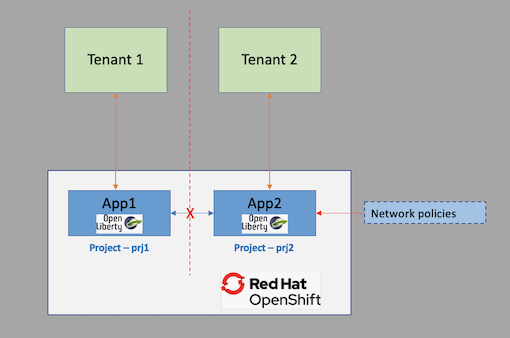

Network isolation
To achieve multitenancy, you need to isolate the networks for the different tenants. This tutorial shows you how to achieve network isolation for your applications and services deployed on a OpenShift cluster on IBM Cloud using projects and network policies.
In this tutorial, you will learn how to:
- Create a project in OpenShift and deploy a web application that runs on Open Liberty using odo.
- Configure multitenant isolation by using network policies for a project.
- Test the multitenant mode configuration.
Review of OpenShift access controls¶
As a reminder, a project in OpenShift requires authentitcation and authorization in order to access a namespace. This ensures that only authorized users can access the resources within a project. Network policies are resources that control the traffic between pods and network endpoints in an OpenShift cluster. They are configured as rules specified in YAML files and applied to the OpenShift cluster.
Examples of what you can do with network policies include:
- Block all traffic between projects in an OpenShift cluster
- Block all inbound external traffic for a service within a project
- Allow traffic between services within a project
Tutorial overview¶
This tutorial demonstrates how to configure a multitenant mode using two sample applications: App1 and App2.
First you will deploy your applications to specific projects.
- App1 is deployed in a project
prj1. - App2 is deployed in a project
prj2.
Once deployed, App1 exposes an endpoint that, in turn, invokes App2 and returns the results.
Next, you will isolate App2 by applying network policies to project prj2.
Then you will test the multitenant mode configuration for prj2 by again invoking the endpoint on App1. This time the invocation should not return a result because App1 cannot invoke App2. The following diagram shows the workflow:

Prerequisites¶
To complete the steps in this tutorial you need to:
- Create an IBM Cloud account
- Install odo - odo is a command-line interface (CLI) that helps developers iterate their code on Red Hat OpenShift and Kubernetes.
- Install oc client - With OpenShift command-line interface (CLI), the oc command, you can create applications and manage OpenShift Container Platform projects from a terminal.
- Install Git client
Estimated time¶
Completing this tutorial should take about 30 minutes.
Steps¶
Create an OpenShift cluster¶
Create an instance of OpenShift cluster. Follow the prompts in the IBM Cloud Catalog to create a cluster hosted on IBM Cloud.
Clone the repo¶
Clone the repo by running this command:
git clone https://github.com/IBM/multitenant-network-isolation-tutorial.git
This creates a folder named multitenant-network-isolation-tutorial. The folder contains the source code for two applications - App1 and App2, and the configuration files for network policies.
Log in to your OpenShift cluster on IBM Cloud¶
Open the OpenShift web console for the cluster you created earlier. Click on the logged-in user ID on the top right and select Copy Login Command.
Open a terminal window. Log in to OpenShift using the login command you just copied.
Create projects¶
Run the following commands to create two projects, one for each of your sample applications:
oc new-project prj1
oc new-project prj2
Deploy the applications¶
Now you will deploy application App1 into project prj1 and deploy App2 into project prj2.
Run the following commands to deploy the application App1 into the project prj1:
oc project prj1
cd multitenant-network-isolation-tutorial
cd app1
odo create app1
odo push
cd ..
Get the URL for the deployed application App1:
odo url list
This retursn the URL for accessing App1. Make a note of the URL.
Found the following URLs for component app1
NAME STATE URL PORT SECURE KIND
ep1 Pushed http://ep1-app1-prj1.xxxx.containers.appdomain.cloud 9080 false route
Next, run the following commands to deploy the application app2 into project prj2:
oc project prj2
cd app2
odo create app2
odo push
cd ..
Get the URL for the deployed application.
odo url list
This returns the URL for accessing App2. Make a note of the URL.
Found the following URLs for component app2
NAME STATE URL PORT SECURE KIND
ep1 Pushed http://ep1-app2-prj2.xxxx.containers.appdomain.cloud 9080 false route
Invoke an endpoint on App1¶
Use the following CURL command to invoke an endpoint getdata exposed by App1. Internally, this invokes an endpoint on App2 and returns the result.
curl http://ep1-app1-prj1.xxxx.containers.appdomain.cloud/app1/getdata
The URL invoked above is [App1 URL noted earlier]/app1/getdata.
Take a look at the getRequest method in the source Java file GetData.java located at ../multitenant-network-isolation-tutorial/app1/src/main/java/com/example/GetData.java.
Here, you invoke the end point http://app2.prj2.svc.cluster.local:9080/app2/resource on App2 in the getRequest method.
@GET
public String getRequest() {
URL url;
StringBuffer content = new StringBuffer();
try {
url = new URL("http://app2.prj2.svc.cluster.local:9080/app2/resource");
HttpURLConnection con = (HttpURLConnection) url.openConnection();
con.setRequestMethod("GET");
con.connect();
BufferedReader in = new BufferedReader(new InputStreamReader(con.getInputStream()));
String inputLine;
while ((inputLine = in.readLine()) != null) {
content.append(inputLine);
}
in.close();
} catch (Exception e) {
// TODO Auto-generated catch block
e.printStackTrace();
return "java.net.UnknownHostException encountered - Could not invoke App2!";
}
return content.toString();
}
You should see output like below if App1 is able to invoke the endpoint on App2.
Successful invocation - This is a resource from App2!
Configure multitenant mode for prj2 using network policy¶
In this section, you will configure network policies for project prj2 in order to isolate App2 in prj2.
As part of the multitenant mode, you will create three network policies:
- Allow from OpenShift ingress
- Allow from same namespace
- Allow from OpenShift monitoring
The YAML files with the rules are provided below. You will apply these policies on the cluster using the OpenShift CLI interface.
- Allow from OpenShift Ingress - Ingress is an object that allows access to your Kubernetes services from outside the cluster.
This policy allows incoming requests through ingress into the project prj2, which enables you to invoke the exposed endpoints on App2. The policy described below applies to all pods in the project. But, you can restrict this policy to pods whose services need to be exposed using the podSelector.
apiVersion: networking.k8s.io/v1
kind: NetworkPolicy
metadata:
name: allow-from-openshift-ingress
spec:
ingress:
- from:
- namespaceSelector:
matchLabels:
network.openshift.io/policy-group: ingress
podSelector: {}
policyTypes:
- Ingress
- Allow from same namespace - This policy only accepts connections from pods within the project. After setting this,
App1inprj1will not be able to send requests toApp2inprj2. The invocation to the URLhttp://app2.prj2.svc.cluster.local:9080/app2/resourceinApp1will fail after setting the following network policy.
kind: NetworkPolicy
apiVersion: networking.k8s.io/v1
metadata:
name: allow-same-namespace
spec:
podSelector:
ingress:
- from:
- podSelector: {}
- Allow from OpenShift monitoring - This policy allows monitoring of your services for metrics using OpenShift monitoring.
apiVersion: networking.k8s.io/v1
kind: NetworkPolicy
metadata:
name: allow-from-openshift-monitoring
spec:
ingress:
- from:
- namespaceSelector:
matchLabels:
network.openshift.io/policy-group: monitoring
podSelector: {}
policyTypes:
- Ingress
Now, run the following commands to configure a multitenant mode for project prj2.
oc project prj2
cd resources
oc create -f allow-from-openshift-ingress.yaml -n prj2
oc create -f allow-same-namespace -n prj2
oc create -f allow-from-openshift-monitoring.yaml -n prj2
Check that the network policies are set correctly by running the following command:
oc get networkpolicy
The below output should be displayed:
NAME POD-SELECTOR AGE
allow-from-openshift-ingress <none> 43s
allow-from-openshift-monitoring <none> 20s
allow-same-namespace <none> 30s
Invoke the endpoint on App1 after multitenant mode configuration for prj2¶
Use the following command to again invoke an endpoint getdata exposed by App1.
curl http://ep1-app1-prj1.xxxx.containers.appdomain.cloud/app1/getdata
As you can see from the following output, App1 is unable to invoke an endpoint on App2.
java.net.UnknownHostException encountered - Could not invoke App2!
If you access the pod logs for App1 in your OpenShift web console, you can see the following error:
[INFO] [err] java.net.UnknownHostException: app2.project2.svc.cluster.local
[INFO] [err] at java.base/java.net.AbstractPlainSocketImpl.connect(AbstractPlainSocketImpl.java:220)
[INFO] [err] at java.base/java.net.Socket.connect(Socket.java:609)
[INFO] [err] at java.base/java.net.Socket.connect(Socket.java:558)
[INFO] [err] at java.base/sun.net.NetworkClient.doConnect(NetworkClient.java:182)
[INFO] [err] at java.base/sun.net.www.http.HttpClient.openServer(HttpClient.java:474)
[INFO] [err] at java.base/sun.net.www.http.HttpClient.openServer(HttpClient.java:569)
[INFO] [err] at java.base/sun.net.www.http.HttpClient.<init>(HttpClient.java:242)
[INFO] [err] at java.base/sun.net.www.http.HttpClient.New(HttpClient.java:341)
[INFO] [err] at java.base/sun.net.www.http.HttpClient.New(HttpClient.java:362)
[INFO] [err] at java.base/sun.net.www.protocol.http.HttpURLConnection.getNewHttpClient(HttpURLConnection.java:1253)
[INFO] [err] at java.base/sun.net.www.protocol.http.HttpURLConnection.plainConnect0(HttpURLConnection.java:1187)
[INFO] [err] at java.base/sun.net.www.protocol.http.HttpURLConnection.plainConnect(HttpURLConnection.java:1081)
[INFO] [err] at java.base/sun.net.www.protocol.http.HttpURLConnection.connect(HttpURLConnection.java:1015)
[INFO] [err] at com.example.GetData.getRequest(GetData.java:36)
IBM Cloud's Calico network plug-in¶
Every Red Hat® OpenShift® on IBM Cloud™ cluster is set up with a network plug-in called Calico. Default network policies are set up to secure the public network interface of every worker node in the cluster. You can use Calico and Kubernetes to create network policies for a cluster. With Kubernetes network policies, you can specify the network traffic that you want to allow or block to and from a pod within a cluster. To set more advanced network policies such as blocking inbound (ingress) traffic to network load balancer (NLB) services, you can use Calico network policies.
Summary¶
In this tutorial, you configured the multitenant isolation mode for a project using Kubernetes network policies. Also you learned about OpenShift network policies and how to configure your cluster for isolation using them.
Please refer the below links for further reading: - Controlling traffic with network policies for OpenShift on IBM Cloud - Networking in OpenShift - Using odo for OpenShift